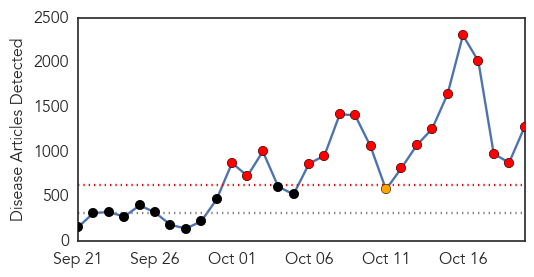

30 Day Trends
Web: 17 alerts, 1 warnings
Twitter: 8 alerts, 7 warnings
Top Articles:
- 1.000
- Questions and answers about Ebola
- 1.000
- Latest Developments In The Ebola Story
- 1.000
- Beefed-up measures to stop Ebola in its tracks
- 1.000
- No one is free from the risks of Ebola – Sin Chew Daily
- 1.000
- Zimbabweans in mortal fear
- 1.000
- Ebola in Liberia: Liberia President describes Ebola effects in a 'Letter to the World'
- 1.000
- Region 7 quarantine, health execs get ready
- 1.000
- Cuba sends more aid to Ebola zone
- 1.000
- Ebola threat in US, and we're not prepared to contain it, experts warn
- 1.000
- Researchers try to quell Ebola fears
- 1.000
- No confirmed Ebola cases in South Africa
- 1.000
- Monitoring ends for dozens on Ebola watch lists
- 1.000
- 5 misconceptions about Ebola
- 1.000
- Latest Developments In The Ebola Story : The Two-Way : NPR
- 1.000
- Ebola, now a household word, as the United States responds here, as well as where it began
- 1.000
- Ebola patient's family completes 21-day quarantine
- 1.000
- Ebola outbreak: Hundreds of parents remove schoolchildren after principal visits Zambia
- 1.000
- Ebola outbreak: Hundreds of parents remove schoolchildren after principal visits Zambia
- 1.000
- Ebola outbreak: Britain steps up airport screening as UN aid worker dies from virus
- 1.000
- Ebola crisis: Nigeria declared Ebola-free three days after Senegal beats virus
- 1.000
- Ebola crisis: How much are different countries donating to fight the outbreak – and is it enough?
- 1.000
- Third UN employee dies from Ebola
- 1.000
- Ebola Outbreak 2014: WHO Declares Nigeria Ebola-Free : News : Headlines & Global News
- 1.000
- Worst Ebola outbreak on record tests global response
- 1.000
- Ebola patient's family completes 21-day quarantine
- 1.000
- Ebola fears, flu season collide
- 1.000
- U.S. ramps up Ebola response
- 1.000
- U.N. staffer dies of Ebola
- 1.000
- The latest on the Ebola crisis
- 1.000
- Ebola Today: Nigeria is Now Free of Ebola, WHO Declares
- 1.000
- Researchers try to quell fears over Ebola;
- 1.000
- Ebola: WHO under fire over response to epidemic
- 1.000
- Big Challenges Ahead in Fighting Ebola
- 1.000
- ABC-7.com WZVN News for Fort Myers, Cape Coral & Naples, Florida
- 1.000
- The Latest On The Ebola Crisis: What You Need To Know
- 1.000
- Latest Developments In The Ebola Story
- 1.000
- Ebola update: Texas quarantine lifted; talk of travel bans
- 1.000
- 4 Pieces Of Good News About Ebola That Have Gotten Lost In The Hysteria
- 1.000
- Kansas health officials review Ebola plan
- 1.000
- Latest Developments In The Ebola Story
- 1.000
- CDC issues new guidelines for hospitals for Ebola
- 1.000
- Dallas hospital confirms first Ebola case in US
- 1.000
- Ebola crisis turns a corner as U.S. issues new treatment protocols
- 1.000
- Ebola crisis turns a corner as U.S. issues new treatment protocols
- 1.000
- Ebola quarantines end for 43 people in Dallas
- 1.000
- What you need to know about Ebola
- 1.000
- World Outbreak of Ebola – a Timeline of a Killer
- 1.000
- Ebola crisis: Worst-hit African nations get key supplies
- 1.000
- Ebola Front-Line Doctors at Breaking Point
- 1.000
- CHRONOLOGY-Worst Ebola outbreak on record tests global response
Showing top 50 articles...
Top Tweets:
- 0.955
- RT: Haiti Ministry's of health has announced harshest measures taken by no other countries to prevent Ebola in Haiti http:/…
- 0.918
- Il doit présenter à son port de débarquement en Haïti un carnet de santé incluant le test pr l’Ebola émis par un centre autorisé.
- 0.909
- Great news! MT officially declares Ebola outbreak in Nigeria over & commends country on diligence to end transmission of the virus.
- 0.889
- RT: Frieden: All front line health care workers must think " ebola" and also need a site mgr at each ebola treatment unit
- 0.809
- Ebola can enter through broken skin or unprotected mucus membranes.
- 0.747
- For WHO to declare an Ebola outbreak over a country must pass through 42 days w/ no new cases detected.
- 0.709
- RT: Health officials still have plenty of opportunity to keep the Ebola virus from spreading in the United States: http://t.co/07gp…
- 0.700
- Yes a 1:10 dilution of bleach will kill Ebola. Any EPA-approved disinfectant for non-enveloped viruses will kill Ebola
- 0.699
- Malaria deaths in West Africa likely to soar as Ebola cripples health systems http://t.co/EROGGWnu7A globalhealth
- 0.680
- Since Dec. 2013 Guinea Liberia Nigeria & Sierra Leone reported over 7k Ebola cases. You can help: http://t.co/TLqVpENLQO FightingEbola
- 0.643
- RT: WHO officially declares the Ebola outbreak in Nigeria over and commends the country on its diligence to end the transmission of …
- 0.643
- RT: WHO officially declares the Ebola outbreak in Nigeria over and commends the country on its diligence to end the transmission of …
- 0.633
- RT: Frieden: CDC doing rapid assessments on hospitals to determine fitness to treat ebola patients.
- 0.510
- RT: Frieden: Important to have separate "clean" and "dirty" areas in treatment facilities ebola
Web/News Articles
Tweets

Article Locations

Article Confidences